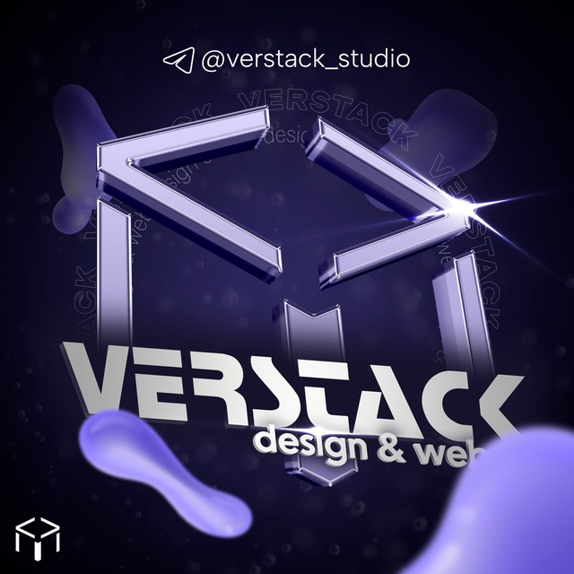

email: vladimirsldhn@gmail.com
socials: @Zeno1DD
Это технология, которая позволяет создавать на одном физическом сервере несколько виртуальных машин (ВМ) или контейнеров. Каждая виртуальная машина может работать как отдельная операционная система с полностью изолированным набором ресурсов, таких как процессор, оперативная память и место на диске.
Полная виртуализация — использует гипервизор, создающий полностью изолированную виртуальную среду для каждой ВМ. Пример: KVM (используется в Proxmox).
Контейнеризация — виртуализация на уровне операционной системы, где несколько контейнеров используют одно ядро ОС, но остаются изолированными друг от друга. Пример: Docker (в Unraid) или LXC (в Proxmox).
Год выпуска: Proxmox VE впервые выпущен в 2008 году.
Компания-разработчик: Proxmox Server Solutions GmbH, расположенная в Австрии.
Причины создания: Proxmox VE был разработан как бесплатная альтернатива коммерческим решениям для виртуализации, таким как VMware и Hyper-V, с акцентом на open-source принципы. Его главной целью было предоставить пользователям удобную и надёжную платформу для создания и управления виртуальными машинами.
Proxmox VE — это мощная и гибкая платформа для управления виртуальными машинами и контейнерами. Она подходит для профессионального использования в организациях и отлично справляется с задачами создания кластеров, высокодоступных конфигураций и резервного копирования.
Год выпуска: Unraid был впервые представлен в 2005 году.
Компания-разработчик: Lime Technology, Inc.
Идея и цели: Unraid был разработан как система для домашнего использования и энтузиастов, которым требовалось простое, но гибкое решение для управления данными и виртуализацией. Система стала популярной среди пользователей, стремящихся создать медиа-сервера, NAS-системы и платформы для Docker-контейнеров.
Unraid — это гибкая и удобная платформа, подходящая для домашних пользователей и энтузиастов, которым требуется система для хранения данных, запуска медиа-сервера и использования контейнеров Docker. Она отличается простотой использования и уникальным подходом к хранению данных. Однако Unraid имеет ограниченные возможности для корпоративного уровня и требует платной лицензии.
Proxmox VE и Unraid — это две мощные платформы для управления виртуализацией и хранения данных, но они ориентированы на разные задачи и аудитории.
Proxmox VE и Unraid дополняют друг друга в сфере виртуализации и хранения данных. Если вам нужно решение для корпоративного уровня с поддержкой кластеров и высокой доступностью, Proxmox — это оптимальный выбор. Если же вам нужно простое и мощное решение для домашнего использования или личного сервера, Unraid будет отличным вариантом.